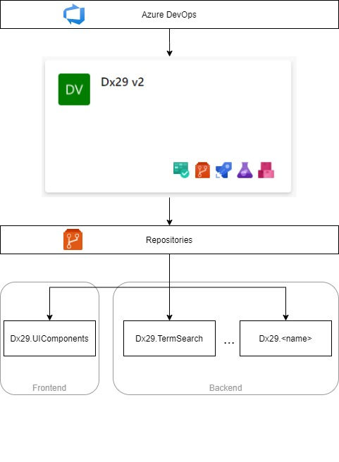
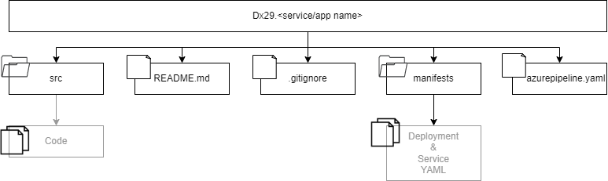

4. Code Guidelines¶
An architecture based on microservices has been chosen.
- There will be a project in Azure DevOps for each application to be developed.
- Both the client and each microservice in the backend will correspond to a separate code project located in a DevOps repository of the parent project.
According to this, the rules set out in this document will contemplate:
- The organisation of the repositories and their structure in Devops
- The skeleton or base structure of the code for both the backend and the frontend.
It should be noted that this document will develop code guidelines for private DevOps repositories, but this would be applicable to any GitHub repository as well.
4.1 Repositories¶
The first step will be to create a project in Azure DevOps if it did not exist for the platform or to work on the project if it was already created. As already said each microservice and the client or frontend will be in different repositories in DevOps.

The name of the repositories will be: <project name>.<microservice/application name>.
Thus, in the case of the Dx29 project:
- project name = Dx29
- name of the microservice/application, for example would be “TermSearch”.
In turn, each repository will be organised as follows:

- An “src” folder where the project code will be.
- A “README.md” file that will contain the necessary information as a minimum for: downloading the project, compiling, testing and execution.
- A “.gitignore” file to avoid “unnecessary” code appearing in the project: for example, the “node modules” folder, as this will make the project very heavy and can be obtained by running “npm install” on it locally to obtain it.
- Manifests folder with the required files for the build and deployment tasks.
- Azure pipeline YAML file for the automatization of the build and deploy tasks.
4.2. Basic structure of the code¶
Here we must differentiate between backend and frontend projects:
- The backend can be implemented using different technologies, but it will have a common skeleton in all of them.
- The frontend is implemented in Blazor so the structure will be based on the one in this framework. The only requirement that both will have in common is that GitFlow will be used to work.
4.2.1. Backend: microservices¶
4.2.1.1. Project structure¶
The Model-View-Controller (MVC) will be used, i.e. the data and business logic of an application will be separated from its representation and the module in charge of managing events and communications. Therefore, for the implementation of each service there will be a series of modules to be used. According to the functionality and needs, all or only some of them will appear:
- Controller: This is the module that processes the data that arrives from the client and communicates to the views so that they show the data requested by the client.
- Views: They define how the application’s user interface will be displayed.
- Models: The classes that resolve the business logic of our application are implemented.
Generally, there will always be a set of controllers. In each of them, the methods that the client can use (API) will be defined.
On the other hand, there will be private functions, which can also use several controllers, that will define services. An example of this could be the sending of emails: if a microservice has the functionality to send emails, an email management service can be designed containing the functions to perform these operations.
And finally, there may be documents, files, images, … necessary for the functionality of the microservice. All these will be grouped and stored in a specific folder that can be subdivided into different directories: assets. Depending on the technology chosen for the implementation of the service, all these modules will be linked with the help of other mandatory files or archives.

For example, in the case of node.js there will be:
- Two files for the management of the libraries and the execution, compilation and testing of the project: package.json and package-lock.json.
- A main file to start the execution. This is configured according to the content of package.json. The express server is executed in it.
- A definition and configuration file for the express server: app.js.
- A routes folder. In this folder the different files containing the API exposure information will be organized, that is, they link the external requests with the drivers’ methods.
- A controllers folder. Where the functionality of the different methods exposed by the microservice will be defined and implemented.
- A folder of models. The business logic will be defined (for example: the database models used) in the case in which it is to be used. This is optional.
- A services folder. This will be organized into different files or services and will set out the implementation of the different functionalities required for the microservice. This is optional.
- An assets folder containing the information, documents, images, etc. that the microservice needs to use. This is optional.
4.2.1.2. Programming rules¶
For the implementation of each of these modules, the following rules must be observed:
- Constants are defined with capital letters
- Names of functions, methods and variables should be explained.
- If it is required to use an internal function for the validation of the input parameters this function will be called: “validate”. It may be necessary to create it within a service that should contain the word “validate” in its name.
- The methods and functions must be readable without having to scroll with the mouse, therefore, it is necessary to manage to modularize them as much as possible and extract part of the implementation in independent private functions and independent and reusable services.
- Only method definition block comments will be added to those exposed in the API, that is, only those defined in the controllers and used from a client. These comments will follow the “apidoc” format.
- All the files and archives that are not necessary will be included in the .gitignore so that they are not uploaded to the repository (an example would be the node modules since these are downloaded by executing npm install with the configuration of the package.json).
- In the implementation of a new file first the necessary “imports” or “require” will be written, then the constants will be defined and finally the methods and functions.
- You must follow the rules marked by “ESLint” (add the extension in Visual Studio). An example is that the comparisons in “if” must be done by also checking the type of variable: use “===” instead of “==”.
- The indexing of all code files will be validated. For this purpose, the IDEs provide aids: in Visual Studio Code you can use “Shift “+”Alt “+”F”.
- Before finishing a task, you must remove all “dead code”, that is, everything that is no longer used or is not necessary.
- If you use some functions of a library and the code is not easy to understand to keep it add a comment with a brief explanation so that anyone can modify it if necessary.
- All the code has to be validated and therefore a series of tests have to be designed and delivered in the same package: unit tests of the functions, methods and services and tests of the functionality and performance of the microservice.
4.2.2. Frontend: client¶
4.2.2.1. Project structure¶
At first it will depend on the framework chosen, always following the guideline of “modularization” in code components.
4.2.2.2. Programming rules¶
The main rule in the design and implementation of a customer will be that of modularization into components. This can be done at various levels:
- At the level of elements that will be shown on the different pages such as lists, tables, etc. Create components and define a style so that they are independent, configured with values or input parameters and can be reused in different points of the code.
- At the service level. In the same way as in the backend, different independent and reusable services will be defined in different points of the code that will provide standard functionalities.
- At the level of routings and pages of the application. A general structure will be defined so that each page shown in the application will be an independent component and will use those defined in the two previous points.
- At the level of functionality. The previous components or the pages of the tool in turn will have to be organized or grouped in folders according to whether or not they are going to be presented in the final application: either by type of user or permissions, for example.
In addition to these rules, some of those already described in the section on the backend are maintained:
- The constants are defined with capital letters
- Names of functions, methods and variables should be explained.
- The methods and functions must be readable without having to scroll with the mouse, so they must be modularized as much as possible and part of the implementation must be extracted into independent private functions and independent and reusable services.
- All the files and archives that are not necessary will be included in the .gitignore so that they are not uploaded to the repository (an example would be the node modules as these are downloaded by running npm install with the configuration of the package.json).
- In the implementation of a new file first the necessary “imports” or “require” will be written, then the constants will be defined and finally the methods and functions.
- You must follow the rules marked by “ESLint” (add the extension in Visual Studio). An example is that the comparisons in “if” must be done by also checking the type of variable: use “===” instead of “==”.
- The indexing of all code files will be validated. For this purpose, the IDEs provide aids: in Visual Studio Code you can use “Shift “+”Alt “+”F”.
- Before finishing a task, you must remove all “dead code”, that is, everything that is no longer used or is not necessary.
- Functionality and integration tests with the backend must be carried out before delivery.
Finally, regarding the client’s style, a Bootstrap template will be used, and the rules of cascade and CSS inheritance will be followed. In addition, specificity will be added when working with components, each of which may have its own style and not be applicable to the rest.